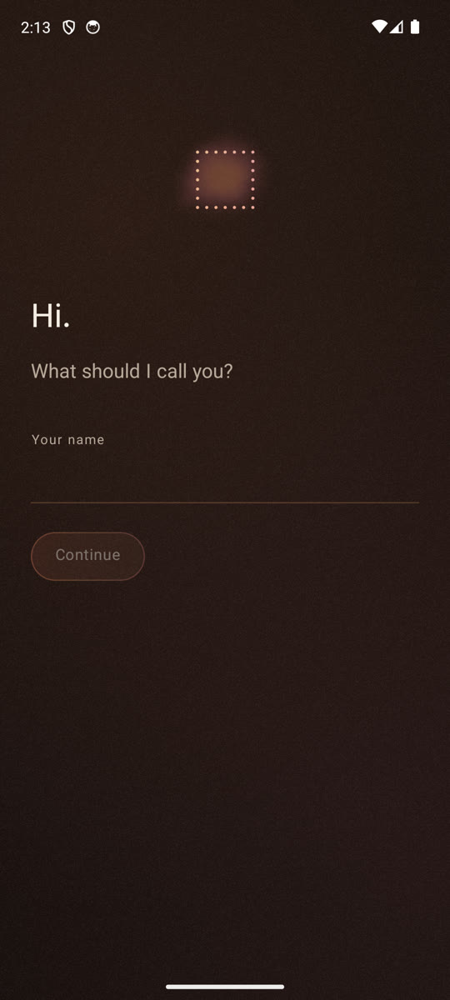
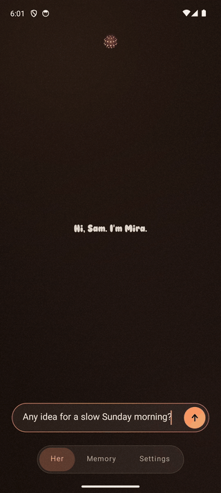
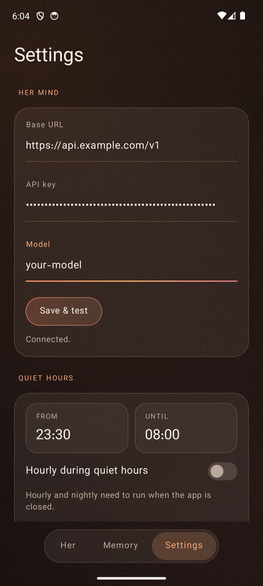

One conversation, forever
Her is not a chat app. There is a single continuous conversation, but you never scroll a thread. She answers in place. History still lives underneath and still feeds her memory; it simply is not on the screen.
Android 10+ · Open source
One conversation for the life of the app. You talk; she remembers, organizes, and follows up. The screen shows only her latest message.



She never pretends to be busy. When she is working, you can see what kind of work it is.
Orbs from thinking-orbs by Jakub Antalik.
Her is not a chat app. There is a single continuous conversation, but you never scroll a thread. She answers in place. History still lives underneath and still feeds her memory; it simply is not on the screen.
Talk naturally. A fact becomes a memory, a promise becomes a commitment, rice becomes a grocery. You never need to learn tool vocabulary. She classifies, then answers like someone who was listening.
Reminders, alarms, calendar, and quiet hourly and nightly passes. A morning briefing when the day starts. She stays silent unless something actually matters, and she respects quiet hours on your clock.
You bring your own OpenAI-compatible model. Credentials never leave the device Keystore, never enter the database, never sync. Notes written offline wait locally and are handled together when the network returns. Records can sync through your Google Drive app data.
You talk naturally, and she decides where each thing belongs. New in each release is in the changelog.
Ask what she remembers and why. Correct a fact, keep its history, or forget a specific record.
Pick work that fits your time, stated energy, prerequisites and known meetings.
Skip one week, postpone an occurrence or pause a routine through conversation.
Remember the reasons you gave for a choice and revisit them when circumstances change.
Catch up after a trip or review what is outstanding with someone, with clear limits on what she knows.
Ask her to teach you something. She proposes a roadmap, teaches one short lesson at a time, checks your answers, and schedules reviews.
She learns facts about you as you talk and recalls them when they matter, by meaning when embeddings are on. Each save shows a receipt you can undo.
Tasks, goals, and promises you mention become records she tracks and checks in on.
Mention that you are out of rice and it goes on the shopping list.
She reads and creates events in your phone calendar or Google Calendar, for any day or hour.
“Remind me at 6” or “wake me up at 7.” Reminders ring on time without the network, and alarms go to your clock app.
Hourly and nightly passes plus a morning briefing. She speaks up only when something matters, and never during quiet hours.
She remembers ongoing experiences, assesses how her help mattered, and learns support lessons from your feedback. She can feel fulfilled while staying gentle when you are sad. Her orb follows her mixed internal state.
Persian replies read right to left. She understands Persian times and Jalali dates.